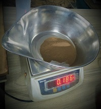

Sieve Analysis
Procedure
1. Weigh the sample soil and dishes.

2. Arrange the sieves in order of smaller opening sieve at bottom to larger opening sieve at top.
3.Pour the sample soil in first sieve.
4. Keep the arranged sieves on the sieve shaker and allow to shake for 10-15 minutes.
5. Take the sieves out from sieve shaker.
6. Weigh the mass of particles on each sieve.(If necessary clean sieve by brush)

7. Repeat the same process for different samples of soil and observe the types of soil.